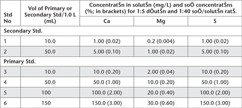

This method determines peroxide-extractable S (SP), peroxide-extractable Ca (CaP) and peroxide-extractable Mg (MgP) after peroxide digestion. SP represents soluble plus exchangeable/adsorbed SO42–, SO42– from gypsum, SO42– from oxidation of sulfides, and SO42– released by breakdown/oxidation of OM. The method is used in conjunction with SKCl to calculate SPOS (POS – potential oxidisable S; SPOS = SP – SKCl). Sulfates from jarosite and iso-structural minerals are not recovered to any appreciable degree.
The method also quantifies soluble Ca2+ from gypsum, as well as Ca2+ and Mg2+ released by acid dissolution of Ca and/or Mg carbonates, oxides or hydroxide minerals. The CaP and MgP results are used in conjunction with CaKCl and MgKCl to calculate reacted Ca and Mg (CaA and MgA).
Calibration Standards for ICPAES analysis of Ca, Mg and S
As for Method 20D1.
Proceed from the end of the titration step in Method 20C1. Quantitatively transfer contents of the titration vessels to tared or weighed beakers using deionised water. Add deionised water to the beaker until the beaker and contents weigh 403.5 g plus the weight of the original soil. This equates to a 1:5 dilution of extract to 0.2 M KCl, which is a more appropriate salt load for subsequent instrumental analysis by ICPAES.
Stir the solutions to homogenise and filter through Whatman No. 3 filter papers (or other thick, medium-speed, high-retention paper), into suitable tubes for the analytical finish by a suitable technique, with ICPAES preferred. Retain the soil residue if residual acid soluble sulfur (SRAS, 20F1) is to be determined.
Set up and operate the ICPAES instrument as advised by the manufacturer. Wavelengths for Ca and Mg are 430.25 nm and 285.21 nm, respectively. The most likely wavelength for S is 182.04 nm, but other wavelengths are possible (see Method 10B3 for examples and more details). Calibrate the instrument using an appropriate range of Combined Working Standard Solutions, guided by examples in Tables 20.4. A reagent blank should also be measured and adjustments made as necessary.
Report peroxide-extractable S (SP), peroxide-extractable Ca (CaP), and peroxide-extractable Mg (MgP) (%) on an oven-dry (85°C) basis.
Table 20.4. Volumes of Ca, Mg and S Primary and Secondary Standards required for Working Standards, plus solution and soil concentrations.
